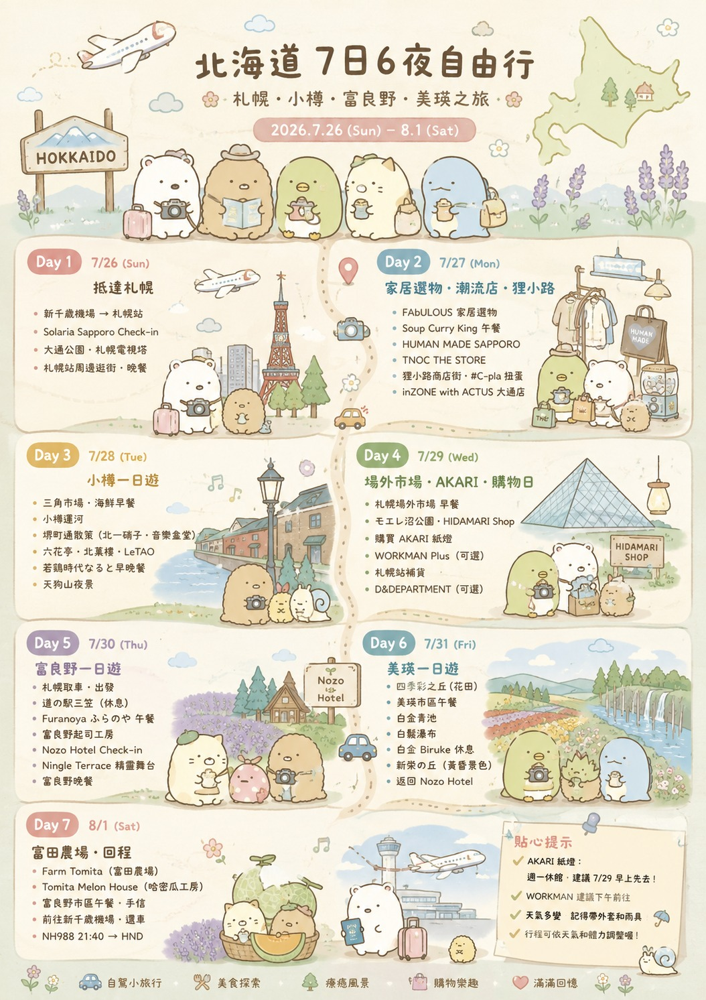

HOKKAIDO · 2026 SUMMER
北海道
北海道
7日6夜自由行
札幌・小樽・富良野・美瑛
2026.7.26 — 8.1
✈️ ANA🚗 3日自駕🏨 兩間酒店📴 離線可用
TRIP STATUS計算中…

DAILY PLAN
每日行程
切換日子，即時睇時間、路程與泊車提示。
SMART PLANNER
時間檢查
按預設／自訂路程時間，檢查兩站之間夠唔夠時間。
💡 免費模式唔會在網站內讀取即時交通。按「行路」或「行車」會直接開啟 Google Maps，顯示當刻路線與時間。
FOOD & PLACES
搵餐廳・景點收藏
即場探索附近餐廳，再直接加入每日行程。
RESTAURANT FINDER
附近有咩好食？
免費搜尋北海道餐廳；結果可再用 Google Maps／食べログ核對。
揀地區或用目前位置，再按「搜尋餐廳」。
餐廳資料：© OpenStreetMap contributors。營業時間可能不完整，出發前請再核對。SAVED PICKS
已有收藏
TRIP KIT
重要資料
航班、住宿、Checklist與個人備忘。